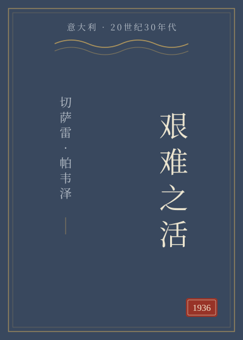
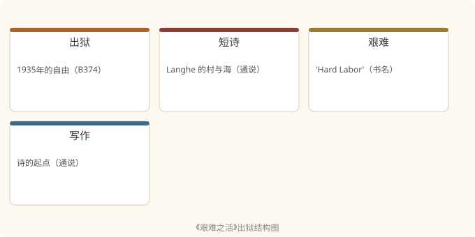

艰难之活
一、基本信息
| 作者 | 切萨雷·帕韦泽 |
|---|---|
| 成书/出版 | 1936年（Britannica B374：Lavorare stanca (1936; Hard Labor)——首部抒情诗集——1935出狱后） Cesare Pavese — Encyclopaedia Britannica（百科全书） |
| 国别/地区 | 意大利 |
| 时代 | 近代 · 20世纪30年代 |
| 体裁 | 诗集 |
| 语言 | 意大利语 |

《艰难之活》出狱结构图（主题·结构图）
二、创作背景
Britannica（B374）：Lavorare stanca——'first lyric poetry volume, after his 1935 prison release'（1935年出狱后的首部抒情诗集）。
Britannica（B374）：帕韦泽——'the novel considered his best'为《月亮与篝火》（交叉）。
题材（通说待核）：《成熟之男》等短诗——'Hard Labor'的题意（通说待核）。
三、内容脉络
（通说待核）出狱后的短诗：Langhe 的村与海。
（通说待核）'艰苦劳动'（Hard Labor）的题意。
四、主要人物表
| 人物 | 身份 | 说明 |
|---|---|---|
| 抒情'我' | 出狱的诗人 | （B374 语境） |
五、主题与艺术特点
- 出狱后的第一书（B374）。
- '艰难之活'的题意（书名——通说待核）。
- Langhe 乡村（通说待核）。
六、影响与评论
- Britannica：'first lyric poetry volume, after his 1935 prison release'（B374）。
Cesare Pavese — Encyclopaedia Britannica（百科全书） - Britannica：1950年自杀（B374 交叉）。
Cesare Pavese — Encyclopaedia Britannica（百科全书）
七、阅读建议
难点
- 短诗的口语。
- 'Hard Labor'的翻译。
- 《艰难之活》中译名（《劳动使人疲惫》）待核。
- 意大利文原版（公有领域状态待核）。
帕韦泽诗歌首选；与《月亮与篝火》对读。
八、待核实
- 篇目（《成熟之男》说）核对（通说）。
- 1936年出版细节待核。
- 英译 Hard Labor (1976——B374)核对。